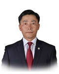

Member of the State Great Khural of Mongolia
Baatarbileg Yondonperenlei
Member of the State Great Khural of Mongolia Baatarbileg Yondonperenlei
Mongolian People's Party
Education, graduated schools, education degree:
1983 - 1993 Secondary School, Tsetserleg soum, Huvsgul aimag (province)
2002 BA in History, Archeology and Anthropology, Faculty of Social Sciences, National University of Mongolia
2004 MA in Social Sciences, National University of Mongolia
Working experience:
2002 - 2009 Officer, Senior Officer at the President Office, Assistant to the President
2009 - 2010 Advisor to Minister for Food, Agriculture and Light Industry
2010 - 2012 Governor of Arkhangai aimag
2012 - 2016 Member of the Citizens' Representatives Hural, Arkhangai aimag
2016 Member of the State Great Hural (Parliament) of Mongolia
Awards:
2004 Good Samaritan Award from Advocates International
2013 Order of Labour
Foreign language knowledge:
English, Russian